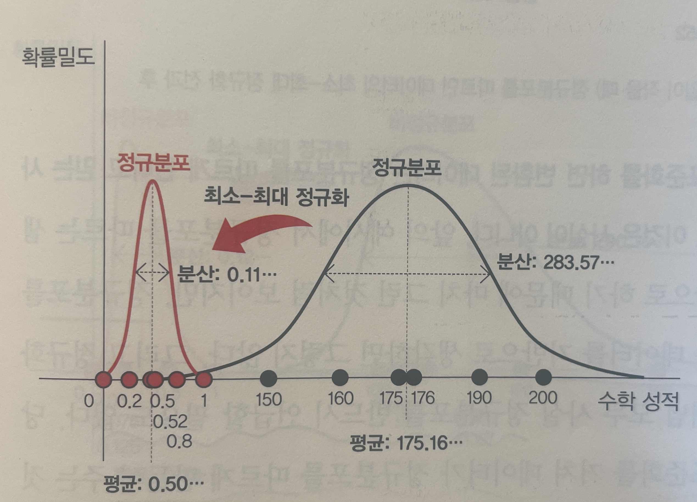
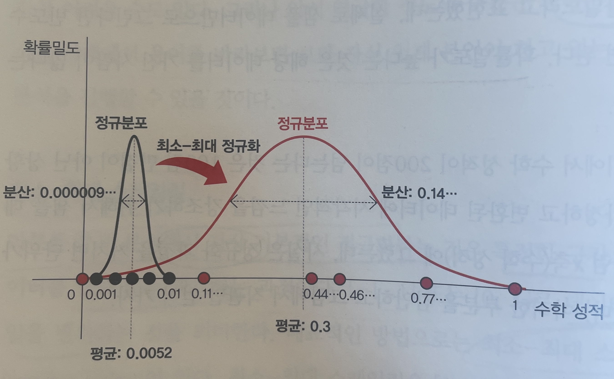
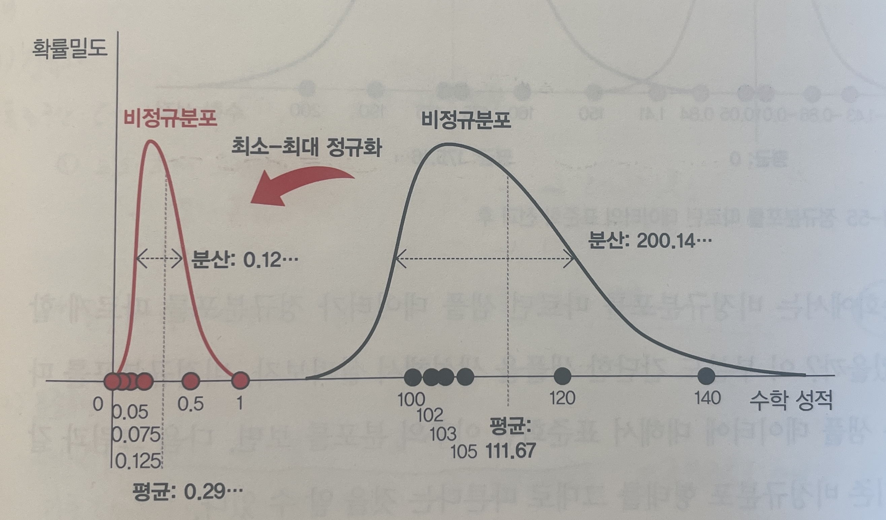
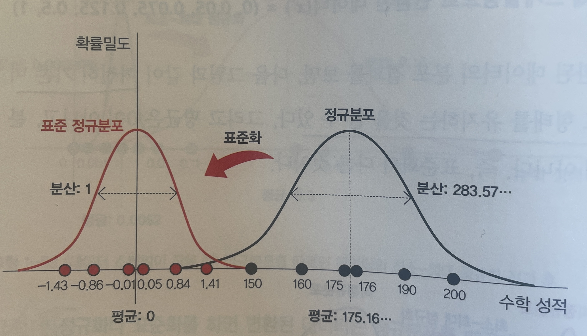
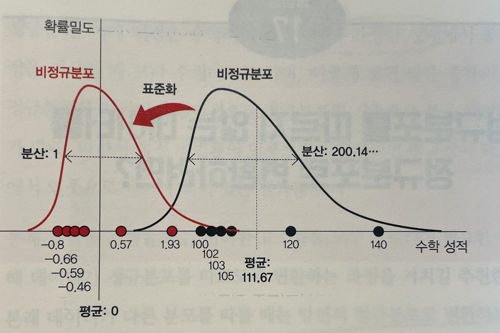

Summary
- 큰 수의 법칙과 중심극한정리는 자주 혼동되지만 전혀 다른 개념으로, 전자는 확률값의 수렴성을, 후자는 표본 평균의 분포 형태를 설명한다.
- 평균을 나타내는 용어들(기댓값, mean, average)은 각각 다른 맥락에서 사용되며, 기댓값은 모집단 평균, mean과 average는 샘플 평균을 의미한다.
- 정규화와 표준화는 데이터의 스케일을 조정하는 전처리 기법일 뿐, 비정규분포를 정규분포로 변환시키는 것이 아니다.
들어가며
“샘플을 많이 모으면 정규분포가 된다던데, 그게 큰 수의 법칙인가 중심극한정리인가?” 두 개념 모두 샘플 수와 관련이 있어 혼동하기 쉽다. 이 글은 확률 이론의 두 기둥을 구분하는 데서 출발해, 평균을 가리키는 여러 용어의 차이를 짚고, 마지막으로 정규화와 표준화가 실제로 무엇을 바꾸고 무엇을 바꾸지 않는지까지 정리한다.
확률 이론의 두 기둥
통계학을 공부하다 보면 “큰 수의 법칙”과 “중심극한정리”를 자주 접하게 된다. 두 개념 모두 샘플 수가 많아지는 것과 관련이 있어 혼동하기 쉽지만, 실제로는 완전히 다른 개념이다.
큰 수의 법칙 — 확률값의 수렴
먼저 통계적 확률과 수학적 확률을 구분해야 한다. 통계적 확률은 샘플링을 통해 추출한 샘플들만 사용해서 확률을 계산한다. 샘플 내에서 각각의 사건이 일어난 횟수를 샘플 수로 나눈 값이다.
반면에 수학적 확률은 이상적 확률로 볼 수 있으며, 이론적으로 계산된 확률이다. 주사위를 예로 들면 주사위 한 눈이 나올 수학적 확률은 1/6이다. 그러나 실제로 여러 번 던져보면 1/6이 아닐 수 있고, 이를 통계적 확률이라고 한다.
실제로 이상적이고 이론적인 수학적 확률을 구하는 것은 어렵다. 그래서 통계적 확률에서 샘플 수를 무수히 많이 늘리면 통계적 확률이 수학적 확률에 근사해진다. 이것이 바로 큰 수의 법칙(Law of Large Numbers, LLN) 이다.
큰 수의 법칙의 핵심
시행 횟수가 많아지면 통계적 확률이 수학적 확률과 유사해지는 법칙으로, 정규분포와는 직접적인 관계가 없다. 정규분포가 아니어도 큰 수의 법칙은 적용된다.
중심극한정리 — 표본 평균의 분포
중심극한정리(Central Limit Theorem, CLT) 는 모집단의 확률분포와 관계없이 샘플 크기가 커질수록 샘플의 평균(또는 샘플의 합)이 정규분포와 가까워진다는 정리다.
여기서 중요한 점은 샘플 그 자체가 아니라 샘플의 모수(평균 또는 합)가 정규분포와 관련이 있다는 것이다. 샘플링을 여러 번 수행하여 각 샘플의 평균을 구하면, 이 평균들의 분포가 정규분포를 따른다.
- : 번째 샘플
- : 번째 샘플의 번째 관측값
- : 번째 샘플의 평균
두 개념의 핵심 차이
| 구분 | 큰 수의 법칙 | 중심극한정리 |
|---|---|---|
| 무엇이 수렴/근사하는가 | 통계적 확률 → 수학적 확률 | 표본 평균의 분포 → 정규분포 |
| 정규분포와의 관계 | 관계 없음 | 밀접한 관계 |
| 적용 대상 | 확률값 자체 | 표본 통계량 |
| 실용적 의미 | 데이터가 많을수록 정확 | 표본 평균으로 추론 가능 |
평균을 나타내는 다양한 용어
통계학에서 “평균”을 표현하는 용어는 여러 가지가 있다. 각각의 용어는 미묘하게 다른 의미를 갖고 있어 맥락에 따라 구분해서 사용해야 한다.
기댓값 (Expectation)
기댓값(expectation)은 어떤 상황이 반복해서 일어날 때 평균으로 예상되는 값이다. 중요한 점은 기댓값이 샘플의 평균이 아니라 모집단이 따르는 확률분포의 평균을 뜻한다는 것이다.
예를 들어 주사위의 각 눈이 나올 확률이 1/6일 때, 기댓값 는 다음과 같다.
- : 주사위 눈
- : 해당 눈이 나올 확률
Mean (평균)
Mean은 유한한 샘플에 대한 평균이다. 기댓값이 모집단 전체의 평균이라면, mean은 내가 가진 샘플들의 평균이다. 샘플 평균(sample mean)이라고도 한다.
Mean은 주로 수학이나 통계학 분야에서 사용되며, 산술 평균(arithmetic mean), 기하 평균(geometric mean) 등 다양한 종류의 평균을 포괄하는 용어다.
Average (평균)
Average도 평균을 의미하지만 mean보다 더 일상적인 용어다. Average는 주로 산술 평균을 지칭하며, mean과 동일하게 샘플에 대한 평균을 의미한다.
맥락적으로 average는 일상 대화에서 사용되고, mean은 수학이나 통계학과 같은 학술적 분야에서 사용된다.
기하 평균 (Geometric Mean)
기하 평균(geometric mean, G)은 양수 값을 모두 곱한 값의 제곱근이다. 주로 넓이, 부피 등 곱으로 계산되는 값들의 평균을 구할 때 사용된다.
- : 번째 양수 값
- : 값의 개수
예시 — 연평균 경제성장률
2020년 경제성장률이 3%, 2021년 경제성장률이 12%일 때, 연평균 경제성장률은 단순히 (3+12)/2 = 7.5%가 아니다. 2021년의 12% 성장은 이미 3% 성장한 2020년을 기준으로 한 성장률이기 때문이다.
각 연도의 성장률은 곱으로 계산되므로 기하평균을 사용해야 한다.
데이터 스케일링 기법
통계 분석이나 머신러닝을 하기 전에 데이터를 전처리해야 한다. 특히 특성별 단위가 달라서 동일하게 비교할 수 없거나, 특정 범위 내 값으로 변환해야 하는 경우가 많다.
이러한 과정을 특징 스케일링(feature scaling) 이라고 하며, 정규화(normalization)와 표준화(standardization) 개념을 사용한다.
정규화 (Normalization)
"정규화"라는 용어의 혼동
정규화는 여러 분야에서 다른 의미로 사용되어 혼동을 주는 용어다.
- Regularization: 모델 규제 (라쏘, 릿지)
- 벡터 정규화: 벡터 크기를 1로 만드는 과정
- 실험 데이터 정규화: 배치 효과 제거
- Feature Normalization: 데이터 스케일링 (이 섹션의 주제)
통계분석에서의 정규화
통계분석에서 정규화는 특정 구간이나 공통된 스케일로 데이터를 압축 또는 확장시키는 변환 과정이다. 특성의 단위가 서로 달라 비교가 불가능할 때, 공통의 스케일로 변환시켜 서로 비교하기 위함이 주목적이다.
최소-최대 스케일링
최소-최대 스케일링(min-max scaling)은 정규화의 대표적인 방법이다. 데이터의 최솟값과 최댓값을 이용하여 데이터를 사이의 값으로 변환한다.
- : 원본 값
- , : 데이터의 최솟값과 최댓값
임의의 범위로 변환하려면 다음과 같이 확장한다.

그림. 정규화에 의한 데이터 압축

그림. 정규화에 의한 데이터 확장
정규화는 분포를 바꾸지 않는다
정규화나 표준화는 데이터를 정규분포로 변환시키는 것이 아니다. 비정규분포를 따르는 데이터를 정규화해도 여전히 비정규분포 형태가 유지된다. 단지 값의 범위만 바뀔 뿐이다.

그림. 비정규분포 데이터의 정규화
따라서 정규화는 서로 다른 범위를 가진 데이터를 특정 구간 내 값으로 변환시켜 비교가 가능하게 만들어 줄 뿐이다.
표준화 (Standardization)
표준화(standardization)는 샘플 데이터를 평균이 0이고 분산이 1인 데이터로 변환시키는 방법이다. 대표적인 방법으로 Z-점수 표준화(Z-score standardization)가 있다.
- : 평균
- : 표준편차
정규분포 데이터의 표준화
기존 샘플 데이터가 정규분포를 따르는 경우, 표준화를 통해 샘플 데이터를 평균이 0이고 분산이 1인 표준 정규분포로 변환시킬 수 있다.

그림. 정규분포 데이터의 표준화
비정규분포 데이터의 표준화
기존의 샘플 데이터가 비정규분포를 따르는 경우, 정규화와 마찬가지로 표준화를 적용해도 단순히 평균이 0, 분산이 1인 데이터로 변환시킬 뿐 기존의 분포 형태는 그대로 유지된다.

그림. 비정규분포 데이터의 표준화
정규화와 표준화, 언제 사용할까
두 기법은 변환 범위와 이상치 민감도가 달라 상황에 맞게 선택한다.
| 기법 | 변환 범위 | 사용 시점 | 장점 | 단점 |
|---|---|---|---|---|
| 정규화 | [0, 1] 또는 [a, b] | 데이터 범위가 명확할 때 신경망 입력층 | 해석 용이 범위 통제 | 이상치에 민감 |
| 표준화 | 평균=0, 분산=1 | 데이터가 정규분포일 때 거리 기반 알고리즘 | 이상치 영향 적음 통계적 의미 | 범위 예측 어려움 |
마치며
- 큰 수의 법칙은 확률값이 수학적 확률로 수렴하는 것이고, 중심극한정리는 표본 평균의 분포가 정규분포에 가까워지는 것이다.
- 기댓값은 모집단의 평균, mean과 average는 샘플의 평균을 가리킨다. 곱으로 계산되는 값의 평균에는 기하 평균을 쓴다.
- 정규화와 표준화는 값의 범위만 바꿀 뿐 분포 형태는 바꾸지 않는다. 분포를 바꾸려면 별도의 정규성 변환이 필요하다.
시리즈 네비게이션
- 이전 장: 1. 통계학 기초 개념
- 다음 장: 3. 분포 변환과 행렬
Reference